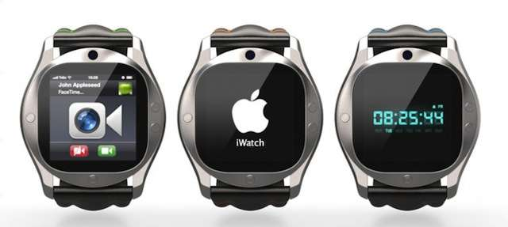
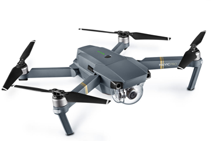

Les Hardwares
A quoi sert cette page ?
Page qui répertorie des hardwares et autres objets connectés.
Au premier jour de la Conférence des développeurs, la firme à la pomme a dévoilé HomePod, une enceinte connectée à laquelle sera intégré l'assistant vocal Siri
ANNONCES. Apple a dévoilé lundi 5 juin 2017, lors de la Conférence internationale des développeurs à San José, une enceinte baptisée HomePod à laquelle sera intégré l'assistant vocal Siri et qui sera amenée à concurrencer les appareils d'Amazon pour les utilisateurs souhaitant recourir à des systèmes commandés par la voix pour effectuer des achats, programmer des activités ou accomplir diverses autres tâches. Il est rare que la firme à la pomme dévoile un nouvel appareil lors de cette conférence annuelle qui sert généralement à présenter de nouveaux logiciels ou des actualisations de modèles existants.
Source : ici
iWatch
Comme tous les modèles d’Apple Watch Series 2, l’Apple Watch Nike+ est équipée d’un GPS intégré qui enregistre votre allure, les distances que vous parcourez et vos itinéraires. Vous n’avez plus à emporter votre iPhone avec vous. Grâce à l’écran le plus lumineux qu’Apple ait jamais conçu, vos données sont faciles à lire, même en plein soleil. Et comme l’Apple Watch Nike+ est étanche jusqu’à 50 mètres1, vous pouvez même piquer une tête après votre jogging pour vous rafraîchir.
Source : iWatch
Focus sur les drones !
Depuis quelques années, on entend plus souvent parler de drone : cet engin volant de taille réduite imitant les avions ou les hélicoptères. En réalité, il s’agit d’un aéronef télécommandé aussi appelé UAV ou UAS (Unmanned Aerial Vehicle ou System). Le plus souvent il est piloté par un téléopérateur . Mais il peut aussi effectuer un itinéraire téléchargé au préalable, basé sur des points GPS. S’il n’était utilisé que par l’armée depuis sa création, il est actuellement disponible en plusieurs variétés destinées aux professionnels de divers secteurs et au grand public. Les missions, qu’un UAV peut prendre en charge,dépendent de ses fonctionnalités. Hormis les modèles exclusivement ludiques, les drones peuvent assurer la surveillance, le transport de certaines marchandises, la photographie ou la vidéographie d’un lieu précis, le renseignement ou la cartographie etc.
Source : www.objetconnecte.net
Maison connecté
Maison connecté Logitech connect la maison avec le smartphone L'interrupteur domotique POP permet à chaque membre de la famille de contrôler l'éclairage, la musique et bien plus encore d'une simple pression sur un bouton. Programmez jusqu'à trois commandes personnalisées sur chaque interrupteur, pour plus de créativité et de commodité. CONTRÔLEZ VOTRE ÉCLAIRAGE L'interrupteur POP vous permet d'adapter l'éclairage à votre activité, que vous regardiez un film, lisiez un livre ou organisiez une fête. Utilisez l'application POP pour configurer et régler la luminosité, la chaleur et la couleur de votre système d'éclairage Philips Hue™, Insteon®, LIFX ou Lutron d'une simple pression d'un bouton. CONTRÔLEZ VOTRE MUSIQUE Programmez POP pour lire vos favoris Sonos au volume approprié. Associez-y un éclairage afin de créer des ambiances adaptées à chaque situation, qu'il s'agisse de se réveiller tôt le matin ou de faire la fête jusque tard le soir. CONTRÔLEZ TOUT CE QUE VOUS VOULEZ, TOUT À LA FOIS Vous voulez adapter l'éclairage ET la musique à l'humeur du moment? Créez des configurations permettant de déclencher plusieurs dispositifs à la fois. Par exemple, vous pouvez configurer le déclenchement de verrous intelligents ou d'éclairages de nuit. Vous pouvez également combiner POP avec une télécommande Harmony associée au hub pour démarrer une activité telle que "Soirée film": la télévision, le câble ou la stéréo se mettent sous tension et les lumières se tamisent. UTILISABLE PRESQUE PARTOUT Sans fil et alimenté par pile, l'interrupteur POP peut être utilisé presque partout. Installez-en un près de la porte d'entrée, laissez-en un sur votre table de nuit ou transportez-en un d'une pièce à une autre. Utilisez les interrupteurs d'appoint POP pour contrôler simplement votre dispositif domotique intelligent où que vous soyez.
Source : blabla
Article 5 !!
Source : Fairphone
Le fairphone est un téléphone écoresponsable qui s'inscris dans une démarche de commerce équitable et de développement durable. Ce smartphone très performant et entièrement démontable, est fabriqué dans le respect des travailleurs et avec des normes strictes. En effet, les matières premières sont achetées à des producteurs qui prennent soin de leur employé et a des pays qui ne sont pas en conflit. Les pièce du téléphone sont toute disponible a la vente, ce qui permet de réparer son téléphone très simplement et pour un prix raisonnable. Le smartphone est équipé de technologie très récente et profite d'un double port Sim ainsi que 32 go de mémoire extensible jusqu'a 64 avec une carte microSD. Équipé aujourd'hui d'Android 6, mais est ouvert à l'installation d'autre distribution comme cyanogène.